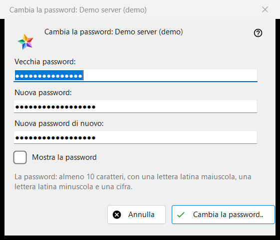
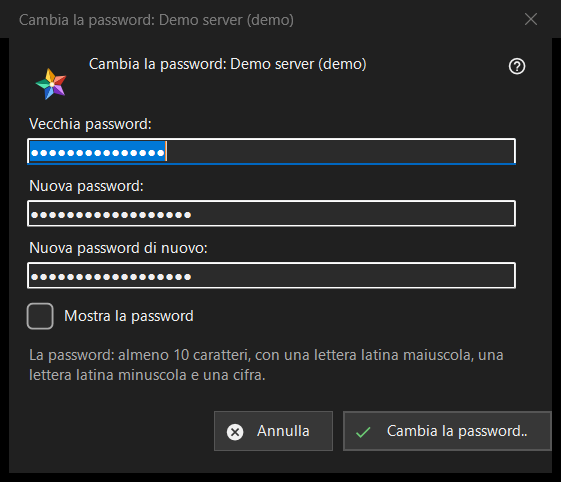

Cambia la password
Scopo
Cambia la password del tuo account su un server di scambio. Si apre dal pulsante «Cambia la password..» di una voce di server nella sezione «I miei dispositivi» dell'elenco delle risorse; il pulsante compare finché quel server è online. Il titolo nomina l'account.


In questo ordine
- Digita la vecchia password.
- Digita due volte la nuova password.
- Premi «Cambia la password..»; «Annulla» chiude la finestra e non invia nulla.
Gli elementi
I tre campi
«Vecchia password:», «Nuova password:» e «Nuova password di nuovo:»; «Mostra la password» le rivela. I campi vengono cancellati quando la finestra si chiude. La finestra si limita a raccogliere le password: il programma le invia al server sulla connessione di quella voce.
La regola della password
La nota dice: almeno 10 caratteri, con una lettera latina maiuscola, una minuscola e una cifra. La finestra lo controlla prima di inviare qualsiasi cosa e nomina la parte che manca, ad esempio «La password è più corta di 10 caratteri.» o «La password non ha una cifra.»; dice anche «Indica la vecchia password.» e «Le due password non coincidono.». Il server applica la stessa regola e ha l'ultima parola.
Dopo il cambio
In caso di successo lo stato dice «La password è cambiata. Questo computer continua a funzionare, e gli altri dispositivi dell'account devono accedere di nuovo.» I rifiuti: la vecchia password non andava; troppi tentativi (attendi un minuto e ripeti); il server ha rifiutato il cambio; manca la connessione al server (connettiti e ripeti).